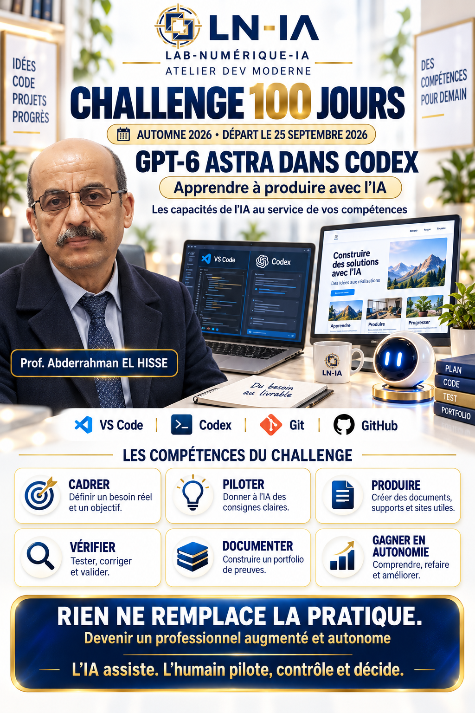
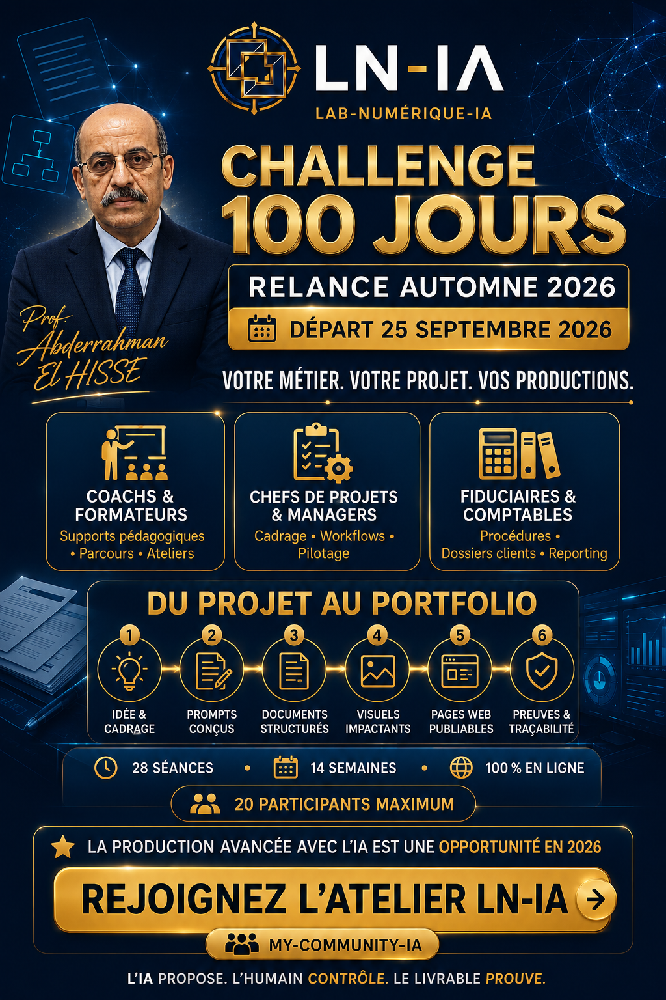

Enseignants,
coachs et formateurs
Une fiche pédagogique, un atelier guidé, une présentation ou un parcours d’apprentissage.
Exemple : transformer une séance en support, activité et grille de contrôle.
Challenge 100 Jours · Relance Automne 2026
Partez d’un besoin réel. Apprenez à produire avec l’IA et à gagner en autonomie.
Un support de cours, une page d’offre, un dossier projet : vous apprenez à cadrer, produire, tester et expliquer votre travail. Les outils évoluent. Votre méthode reste.
Rejoignez la communauté pour préparer la prochaine étape. L’inscription au Challenge se confirme séparément.

14semaines
de progression
28séances
accompagnées
2rendez-vous
par semaine
20participants
maximum
01 / APPRENDRE PAR LA PRATIQUE
Installer une pratique qui dure demande du temps pour essayer, recevoir un retour et améliorer.
Votre progression se construit dans les projets que vous réalisez, les erreurs que vous corrigez et les résultats que vous savez reproduire.
Définir un besoin réel, un public et un résultat attendu.
Votre preuve : une fiche projet.Donner à l’IA le contexte, les consignes et les critères de réussite.
Votre preuve : un prompt maître.Créer un document, un support, un visuel ou une page utile.
Votre preuve : une première version.Tester, relire, corriger et valider les réalisations.
Votre preuve : un contrôle documenté.Relier votre méthode et vos productions dans un portfolio.
Votre preuve : un dossier lisible.Comprendre vos décisions pour savoir refaire et améliorer.
Votre preuve : une démonstration expliquée.L’IA assiste. L’humain pilote, contrôle et décide.
02 / PARTIR DE VOTRE ACTIVITÉ
Une fiche pédagogique, un atelier guidé, une présentation ou un parcours d’apprentissage.
Exemple : transformer une séance en support, activité et grille de contrôle.
Une page d’offre, un dossier projet ou une procédure de travail documentée.
Exemple : passer d’un besoin client à un mini-site de présentation.
Un guide de collecte, un modèle de document ou un tableau de suivi contrôlable.
Exemple : créer une procédure avec des données fictives avant usage réel.
Exemples de projets possibles. Votre réalisation se définit selon votre besoin et votre progression.
03 / REGARDER LES PREUVES
Le portfolio LN-IA présente la sélection des productions, leur évolution et les contrôles réalisés.
Explorer le portfolioAVANT / APRÈS
Observer la progression d’une PWA V1 vers une V2 et les corrections documentées.
Voir la progressionCONTRÔLE
Consulter les critères de contrôle, les points corrigés et le statut de validation.
Voir les contrôlesTRANSMISSION
Découvrir comment le portfolio a été préparé et publié sur GitHub Pages.
Voir la publicationCes liens présentent des synthèses et des métadonnées de preuves. Ils ne donnent pas accès à tous les fichiers sources ou livrables originaux.
04 / UN PARCOURS ACCOMPAGNÉ
Le lundi pour comprendre et cadrer.
Le vendredi pour produire et corriger.
Sept modules, des retours sur vos productions et un portfolio final à présenter.
Format annoncé : environ 14 semaines et 28 séances. Horaires précis, calendrier détaillé et tarifs communiqués lors de l’échange préalable.
Consulter le programmeDéfinir votre objectif et votre point de départ.
Transformer votre intention en consigne contrôlable.
Structurer des contenus adaptés à votre activité.
Adapter un message à son public et à son canal.
Organiser votre projet en page publiable.
Classer, versionner et expliquer votre travail.
Présenter votre progression avec des preuves.

05 / APPRENDRE À PILOTER LES OUTILS
Le parcours s’appuie sur GPT-6 Astra dans Codex, VS Code, Git et GitHub pour apprendre à produire, suivre les versions et documenter vos projets.
Dans le Challenge, les capacités de l’IA servent un objectif pédagogique : apprendre à cadrer, demander, examiner les changements, tester et documenter.
La disponibilité des modèles dépend du compte et du déploiement. Le site d’annonce ne nécessite ni clé API ni abonnement pour être consulté. Documentation officielle OpenAI ↗
DÉPART LE 25 SEPTEMBRE 2026
Consultez le parcours et les conditions de candidature sur la page de formation. Rejoignez My-Community-IA pour recevoir les prochaines informations et préparer votre échange.
Rejoindre le groupe ne confirme pas votre inscription au Challenge.